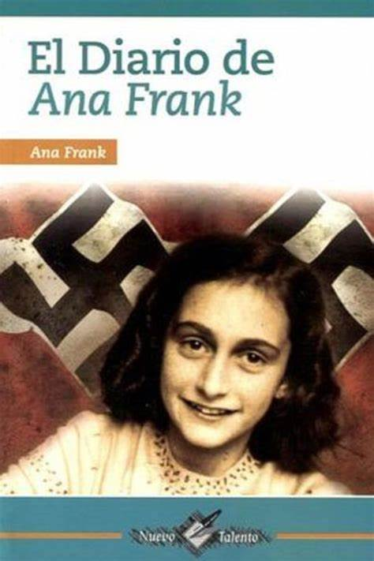
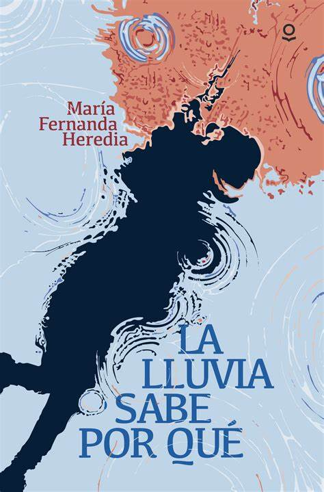

"Reseñas para lectores curiosos"
Bienvenido a nuestra sección de libros, donde cada página es una nueva aventura.
Aquí encontrarás reseñas, recomendaciones y una variedad de géneros literarios que
te inspirarán a sumergirte en historias emocionantes.
Explora nuestras reseñas, comparte tus lecturas favoritas e inspírate por el poder
de las palabras.
RESEÑA: EL DIARIO DE ANA FRANK
Autor:
Ana Frank
Género literario:
Autobiografía
Año de publicación:
Se publicó en el año 1947

Portada del libro "El diario de Ana Frank"
Sinopsis:
El diario de Ana Frank es el relato íntimo de una joven judía obligada a esconderse durante la
ocupación nazi en los Países Bajos durante la Segunda Guerra Mundial. A través de sus escritos, Ana comparte
sus pensamientos, miedos, esperanzas y sueños mientras vive en un anexo secreto con su familia. Su voz sincera
nos permite adentrarnos en un mundo lleno de desafíos y anhelos de libertad.
Temas principales que abarca este libro
La guerra y la persecución: La Segunda Guerra Mundial y el Holocausto son fundamentales en
la narrativa, mostrando el impacto lamentable que provocan las guerras en las personas.
La búsqueda de identidad: Durante el encierro, Ana reflexiona sobre su crecimiento y desarrollo
personal, explorando su identidad como adolescente en un contexto de opresión.
La esperanza y la resiliencia: A pesar de todas las adversidades que Ana tuvo que enfrentar, el
diario está impregnado de un sentido de esperanza y deseo de libertad.
Opinión:
El diario de Ana Frank es mucho más que un libro; es una ventana al corazón de una adolescente que, en medio del horror,
encontró una forma de soñar y resistir. A través de sus pensamientos y emociones, conocemos no solo los hechos de una época oscura,
sino también la fuerza interior de una joven que se negó a dejar de creer en la bondad humana.
Su historia nos toca profundamente porque, a pesar del miedo y el encierro, Ana nunca dejó de tener esperanza. Este libro no solo
nos enseña historia, también nos recuerda lo valioso de la vida, la empatía y la libertad.
Recomendación:
Recomiendo El diario de Ana Frank a todos, especialmente a los jóvenes, porque su historia nos permite ver el mundo a través
de los ojos de una adolescente que, a pesar de vivir momentos difíciles, nunca perdió la esperanza.Es un relato que nos invita a
reflexionar sobre la libertad, la empatía y lo necesario que es no quedarnos indiferentes ante la injusticia.
Para leer este maravilloso libro, puedes hacerlo en el siguiente enlace Diario de Ana Frank
RESEÑA: SOLO LA LLUVIA SABE POR QUÉ
Autor:
María Fernanda Heredia
Género literario:
Narrativa
Año de publicación:
Se publicó en el año 2012

"Solo la lluvia sabe por qué"
Sinopsis:
"Solo la lluvia sabe por qué" es una obra que explora las dificultades de la vida y las emociones
humanas a través de la metáfora de la lluvia. A medida que los personajes enfrentan sus luchas internas y
externas, la lluvia se convierte en un símbolo de purificación, esperanza y renovación. La narrativa se basa
en reflexiones profundas sobre el amor, la pérdida y la búsqueda de sentido en un mundo incierto.
Temas principales que abarca este libro
La introspección: Los personajes se sumergen en sus pensamientos y sentimientos, reflexionando
sobre sus decisiones, así como las causas y consecuencias de sus acciones.
La naturaleza como refugio: La lluvia y el clima juegan un papel importante en la historia, reflejando
el estado emocional de cada personaje en el libro.
La esperanza y la resiliencia: A lo largo de la historia se exploran las relaciones humanas, mostrando cómo
pueden convertirse tanto en un refugio como una fuente de dolor.
Opinión:
Solo la lluvia sabe por qué es un libro que nos invita a emprender un viaje emocionante, reflexionando sobre
nuestras propias experiencias y sentimientos. El autor logra capturar la esencia de la vida, haciendo que cada página
resuene con autenticidad. Como enseñanza, nos deja claro que, a pesar de las tormentas, siempre hay espacio para la
esperanza y la renovación.
Recomendación:
Recomiendo Solo la lluvia sabe por qué a quienes disfrutan de la literatura profunda, analítica y poética.
Es una lectura que invita a la reflexión y que quedará en el corazón de aquellos lectores que se atrevan a explorar sus páginas.
Para saber más de esta grandiosa obra ecuatoriana, ingresa a este link: Más información acerca de la obra
Para explorar las maravillosas páginas de este libro, puedes hacerlo en el siguiente enlace Libro Solo la lluvia sabe por qué
RESEÑA: EL CUENTO DE LA CRIADA
Autor:
Margaret Atwood
Género literario:
Feminismo distópico
Año de publicación:
Se publicó en el año 1985

Portada del libro "El cuento de la criada"
Sinopsis:
El cuento de la criada es una historia que transcurre en un futuro distópico donde el mundo ha colapsado por crisis ambientales
y una alarmante caída en la natalidad. En medio de este caos, seguimos a Offred, una mujer que ha perdido todo: su nombre, su familia,
su libertad. Ahora vive como criada en la República de Gilead, un régimen que controla a las mujeres fértiles para usarlas como
herramientas de reproducción. A través de sus pensamientos y recuerdos, descubrimos no solo los horrores de la opresión, sino también
la fuerza de una mujer que, a pesar de todo, no deja de resistir y soñar con recuperar su voz.
Temas principales que abarca este libro
La opresión de las mujeres: nos muestra de una manera más profunda cómo las mujeres son reducidas a roles estrictos y privados de sus derechos
más básicos. En Gilead, sus cuerpos ya no les pertenecen, y su valor depende únicamente de su fertilidad. Es un relato crudo pero necesario
de lo que ocurre cuando el poder elimina la libertad.
La resistencia y la esperanza: Aun en medio del miedo y el control absoluto, las mujeres no se rinden. A través de pequeños gestos, miradas,
recuerdos o palabras susurradas, mantienen viva la llama de la esperanza. La resistencia en Gilead no siempre es ruidosa, pero sí poderosa.
La identidad y la memoria: Offred se aferra a los recuerdos de su vida pasada —su hija, su esposo, su nombre verdadero como forma de seguir
siendo ella misma. En un mundo que intenta borrar su individualidad, la memoria se convierte en su refugio y su forma de seguir luchando.
Opinión:
El cuento de la criada es una obra impactante que nos invita a una profunda reflexión sobre el lugar de la mujer en la sociedad y los peligros de los
regímenes extremistas. La obra de Margaret Atwood es poderosa y conmovedora, construyendo un mundo inquietante que, aunque ficticio, se siente demasiado
cercano a nuestra realidad. Esta novela no solo es una advertencia, sino también un llamado a defender los derechos humanos, recordándonos lo valiosa que
es la libertad y lo esencial que es la igualdad para construir un mundo justo.
Recomendación:
Recomiendo El cuento de la criada a quienes se sienten atraídos por la literatura distópica y los temas relacionados con el género y los derechos humanos.
Es una lectura que no solo atrapa por su historia, sino que también remueve, cuestiona y deja pensando. Es de esos libros que, al cerrarlos, siguen viviendo dentro
de uno, dejando una huella profunda que perdura con el tiempo.
Para leer este maravillo libro, puedes hacerlo en el siguiente enlace El cuento de la criada